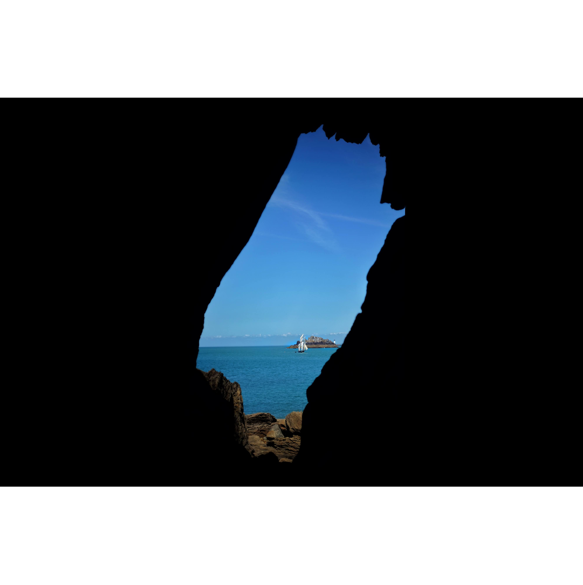
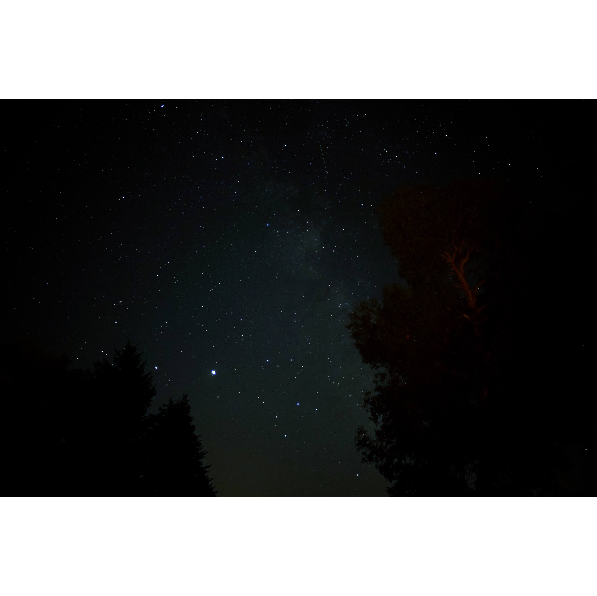
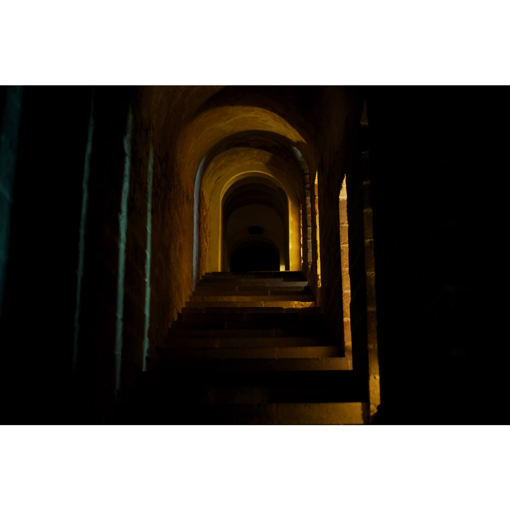

Videography
This is one of my short films created for the Lost Weekend film challenge
of 2020. THe whole film was created in the span of just 48h.
This was really a test of teamwork and collaboration but in the end we were nominated for the
Special Mention. You can find our submission here or above.
This short video was created for the Youth For Climate Instagram page
at the occasion of the Climate Strikes in 2019. This was my first short video that was not
scripted. It was a test in journalistic style shooting.
Photography
On this page, we will be going through chronologically from most recent to oldest.You can also find the rest of the photos on Instagram.

This is a photo from the Luxembourgish Philharmonie. I liked the interesting colors and lights. It gives the photo a futuristic look with the architecture of the building.

This image was also taken in the same location as the previous. I found the lighting with the diffusion from the leaves really interesting.

This photo was taken in Saint Malo, France. The whole image just gives a sense of adventure and I really like how it easily it starts up my imagination.

Taken from the inside of a cave, the contrast between dark and light outside is really interesting. Taken in Bretagne, France.

Here is a photo from some of my experimentation in astrophotography. The photo was taken out in a field aways from a lot of light pollution and so many stars are visible. The Mily Way galaxy is also visible.

This photo is taken from one of the halls in the Mont Saint Michel Abbey in France. The lighting gives a pretty dark atmosphere.
I took this photo because I found the composition of the arch in the middle of the frame was really interesting. The contrast between the blue and white of the arch is really striking too.